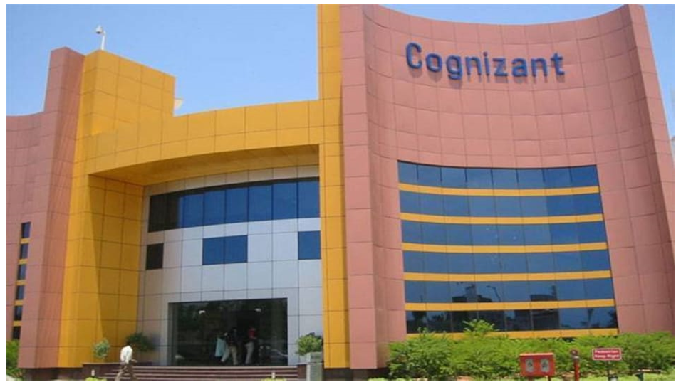

|  |
Info:
Cognizant is an American multinational information technology services and consulting company.
It is headquartered in Teaneck, New Jersey, United States. Cognizant is part of the NASDAQ-100
and trades
under CTSH.
It was founded as an in-house technology unit of Dun & Bradstreet in 1994,and started serving
external
clients in 1996.
After a series of corporate re-organizations there was an initial public offering in 1998.
Cognizant had a period of fast growth during the 2000s and became a Fortune 500 company in 2011;
as of 2021,
it is ranked 185.
|
Cognizant hires for two profiles mainly:
The very first round of Cognizant is Aptitude Test and is 100 minutes round with a total of 80 questions.
The
sections are:
&nsp;Aptitude test: This section has 3 sub-sections with a total of 80 questions. The
difficulty level of this
section varies from medium to high. The sub-sections are:
| Sections | No. of questions | Time |
|---|---|---|
| Quants | 25 | 35 mins |
| Logical | 35 | 35 mins |
| Verbal | 20 | 30 mins |
The round 2 is a coding test that will have 2 sections and is a 180 minute round . 40
mins
for the MCQs and
140 mins for the Coding questions. The difficulty level of this round is high.
| Cognizant Gen C Next Section | No. of questions | Total Time |
|---|---|---|
| MCQ | 20-25 Ques | 40 mins |
| Coding Challenge | 5-6 | 140 mins |
After clearing Round 1 you get eligible for the interview round. The interview round will have both
technical and HR interview. The questions will be asked to judge your technical knowledge, cognitive
abilities, and the right attitude.
The package offered for these candidates will be:
1. 4 LPA(probation period)
2. 4.5 LPA( post-probation period).
Students who clear this coding round 2 go to Round 3 that will be an interview round for GenC Next. This will be both a technical as well as an HR interview. The questions in the interview will be asked to judge your: